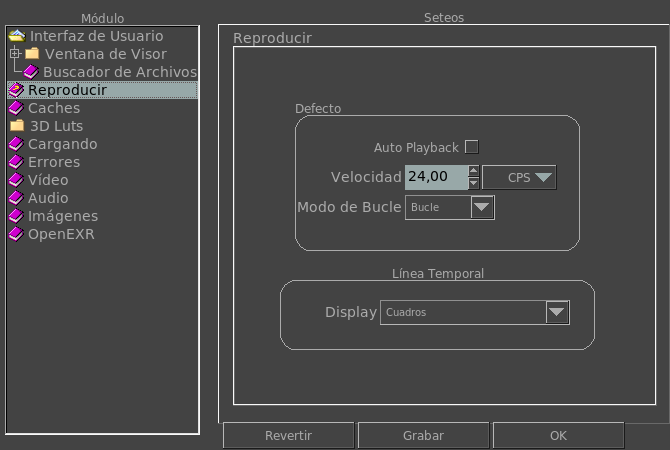

Playback Preferences
The playback preferences tab allows you to modify how mrViewer's playback and timeline works on start up.

Auto Playback
When this option is turned on, as soon as mrViewer loads all the files, it will try to start playing them.
Defaults
Here you can change the default speed (FPS) of the timeline as well as its looping mode.